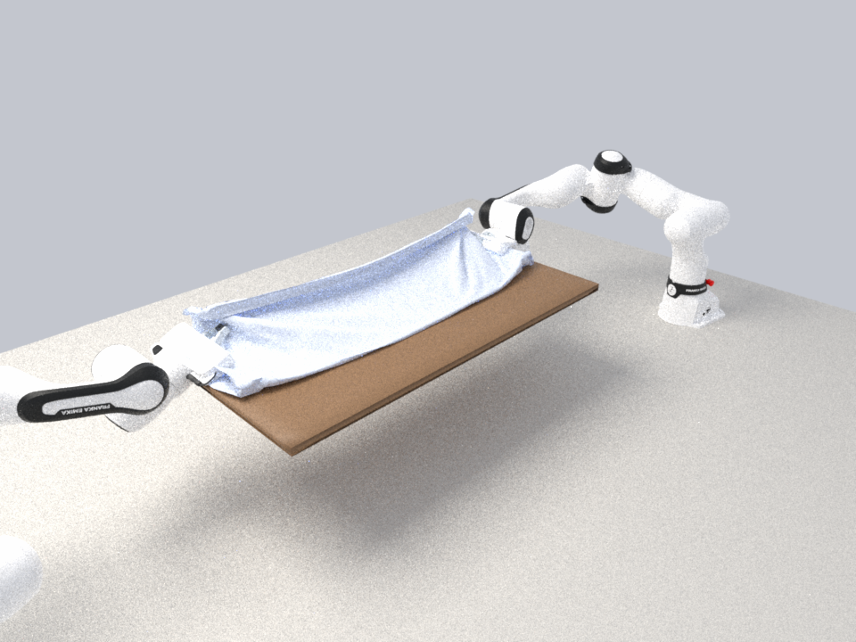
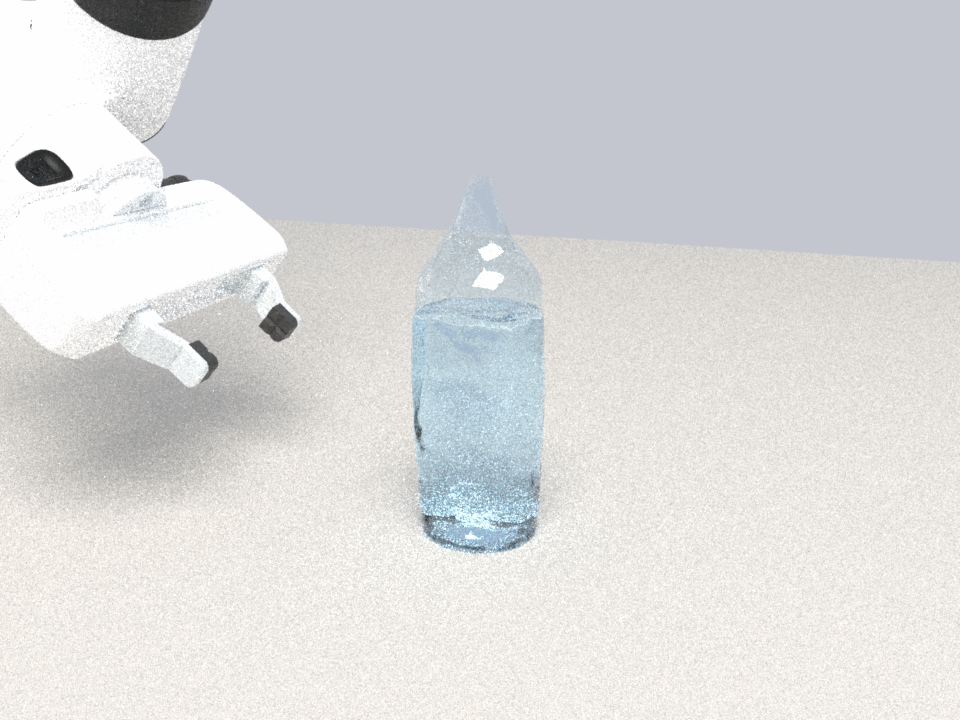

三个操作任务的复现：床单对折、捏瘪水瓶、海绵吸水拧水
robotgym.io 首页用三个任务展示它的物理栈（刚体 MuJoCo、VBD 布料与海绵、PBF 液体）：双臂把床单抬起对折、机械臂捏瘪一只装满水的 PET 瓶、 机械臂把海绵在水碗里浸湿再到杯子上方拧三次。我们用 StiffGIPC 把这三个任务各做了一遍——同一个 IPC 求解器里的布料、薄壳、软体和水， 接触全部是障碍函数 + 连续碰撞检测，不用任何附着约束。这一页记录做法、与原站的差异、数值上踩过的坑，以及每个任务的视频与 USD。
一览
| 任务 | 原站的物理 | 我们的物理 | 需要新增的部分 | 状态 |
|---|---|---|---|---|
| 床单对折（双 FR3） | VBD 布料 + MuJoCo 刚体 | IPC 三角壳布料（拉伸 / 弯曲），URDF 关节驱动的 FR3 ×2，摩擦捏取 | 无 | 已复现 · 近半 96% 叠到远半 |
| PET 瓶捏瘪 | 0.3 mm 塑料壳 + 屈服，PBF 水 | 0.3 mm IPC 薄壳（PET 模量）+ 二面角铰链塑性，引擎 MPM 水与壳双向耦合 | 壳塑性铰链 | 已复现 · 凹 15.8 mm，松开留 14.0 mm，不洒 |
| 海绵吸水拧水 | VBD 海绵（实验性）+ PBF 水 | FEM 四面体海绵 + 引擎 MPM 水，多孔耦合（吸入 / 保水 / 挤出） | 多孔耦合 | 已复现 · 三次拧水共 16.8 ml（原站 33.5 ml） |
1床单对折
场景。1.0 × 0.6 m 的床单（三角壳，25 mm 网格，1025 顶点）铺在一块薄板上，前后各悬出 10 cm。两台 FR3 分别从左右两侧沿板边伸进来， 张开的手指跨在垂下的布边两侧，捏住、抬起、越过板面放到对面，松开——床单被对折。全程只有接触与摩擦，没有把布“粘”在手指上的约束。
做法。手指是 URDF 里的标准 Franka 手指（棱柱关节位置驱动），布料是 IPC 三角壳：膜模量 3×105 Pa、弯曲模量 3×104 Pa（厚 1 mm），面密度 0.2 kg/m²。 逆运动学在 CPU 上逐帧求解（阻尼最小二乘，全程位置误差 0.2 mm），关节目标交给引擎的转动关节驱动。捏取用 2 mm 的障碍距离、1 mm 的指垫间隙（每侧 d̂/4）， 捏住后先把布边向外拉到手掌完全离开薄板的投影，再竖直抬起、越过薄板放到对面。
与原站的差异。原站是 VBD 布料，捏取靠的是同一类接触。我们的床单网格更粗（25 mm），时间步 5 ms；对折的轨迹是手写的分段最小加加速度轨迹，不是学出来的策略。
| 阶段 | 时间 (s) | 指垫间隙 (mm) | 布边最高点 (m) | 布边到指尖 (mm) |
|---|---|---|---|---|
| 捏住 | 7.0 | 1.0 | 0.305 | 7.9 |
| 外拉 | 9.0 | 1.0 | 0.307 | 8.0 |
| 抬起 | 12.0 | 1.0 | 0.491 | 8.2 |
| 放下 | 16.0 | 1.0 | 0.426 | 15.5 |
| 松开后 | 21.2 | 60.0 | 0.414 | 81.7 |
"布边到指尖"是布料顶点到指尖中心的最小距离：捏住期间一直在 8 mm 左右（25 mm 的网格里就是"布在指垫之间"），松开后才拉开。 USD（刚体变换 + 布料顶点，568 帧，8.5 MB）：bedsheet_fold.usdc
2捏瘪水瓶
场景。一只 PET 瓶（半径 32 mm、高 200 mm、壁厚 0.3 mm，旋转体网格 5 mm 边长，1527 顶点）立在桌上，装水 400 ml（2.6 万粒子，静置后水面约 12 cm）。 FR3 从侧面伸过来，两指在瓶身中部（离桌面 9.5 cm）合拢到 32 mm，保持 1.5 s，再张开退回。全程 15 s，时间步 5 ms。
做法。瓶壁是零厚度的 IPC 三角壳，膜刚度按 PET 取（E = 2.5 GPa、t = 0.3 mm），弯曲用二面角铰链模型（D = E t³ / 12(1−ν²)）。 为了让凹痕留下来，我们给铰链加了一个塑性角：每条边记一个永久偏转角 θp，弯曲能用 θ − θrest − θp； 每步结束后，超过屈服角 0.2 rad 的部分全部变成永久的（比例 1.0）。瓶里的水是引擎内的 MPM Lite 水，粒子是 IPC 接触点，壳推水、水顶壳在同一次 Newton 里完成。
与原站的差异。原站的壳用的是“真实刚度与屈服”，液体是 PBF；我们的屈服是铰链级的（弯曲塑性），膜本身保持弹性，PET 的膜屈服没有建模。 瓶子是开口的，水不会密封加压；原站视频里瓶子被捏得更深，我们的捏合深度由夹爪目标间隙决定。
| 阶段 | 时间 (s) | 指间距 (mm) | 瓶身最小半径 (mm) | 凹痕 (mm) | 水面高度 (mm) |
|---|---|---|---|---|---|
| 静置 | 1.5 | 78 | 31.9 | 0.1 | 122 |
| 捏合 | 8.0 | 32 | 16.2 | 15.8 | 134 |
| 保持 | 9.0 | 32 | 16.2 | 15.8 | 134 |
| 松开 | 11.0 | 78 | 18.0 | 14.0 | 128 |
| 结束 | 15.0 | 78 | 18.0 | 14.0 | 127 |
凹痕按瓶身中部一圈顶点到该圈中心的最小距离算（静止半径 32 mm）。捏合时水面升高 12 mm（被挤占的体积），松开后回落。 一次完整运行在一张 A800 上用时 14 分钟（3000 步）。USD（刚体变换 + 壳顶点 + 2.6 万个水粒子，376 帧）约 120 MB，文件较大，暂未随页面提供（整理后以 GitHub Release 发布）。
3海绵吸水拧水
场景。一块 6 × 3.5 × 10 cm 的开孔海绵（FEM 四面体 720 个，E = 50 kPa，ν = 0.35，密度 120 kg/m³，孔隙率 0.85）泡在 28 × 14 cm、水深 5.5 cm 的水盆里；FR3 自上而下、手指沿盆的长边抓住它（指垫合到 44 mm，海绵压扁 27 %），泡 2 s 后提出水面（多余的水滴回盆里），移到杯子上方，分三次把手指合到 24 / 18 / 12 mm 拧水，每次保持 2 s，再放回盆里。判据和原站一样：杯子里收到多少水。
做法。海绵本身是普通软体（stable neo-Hookean 四面体；泊松比取 0.35 而不是泡沫「应有」的 0.1，原因见下文「坑」——这套能量在低泊松比下会被捏到塌缩）；关键是水与海绵的多孔耦合（引擎新增 set_liquid_porous）：取消海绵表面与水粒子的接触，水可以自由进入海绵区域（吸水）；每步先在海绵的四面体里定位粒子（重心坐标），求解前把它们的速度向海绵材料速度松弛（达西式阻力）并抵消重力，求解后再把它们拉回各自的物质点——这三件事都乘一个保水系数 f(s)：饱和度 s ≤ 1 时 f = 1（水完全锁在物质点上，跟着海绵走），s ≥ 1.25 时 f = 0（多余的水完全放开，重力和 MPM 压力把它从开放的表面压出去），中间线性过渡。饱和度 s = 海绵内水体积 / 孔容量，按顶点聚合（一个四面体在 8 mm 水下只装半个粒子，按四面体算会级联漏水；按全局算又看不见局部挤压）。孔容量不能简单取「孔隙率 × 当前体积」：ν = 0.35 的 FEM 被指垫捏扁时主要是向两边鼓，体积掉得很少（60 → 24 mm 时指垫下方的四面体只少 25 % 体积，s 停在 1.0，什么都挤不出来），所以按开孔泡沫算：骨架体积 (1 − φ)V₀ 不变，孔容量 = V₀ · max(0.02, min(J, λmin) − (1 − φ))，λmin 取四面体最短棱的伸长比——单轴捏扁时孔跟着塌掉。网格级的壁面约束对海绵表面不生效，其余器皿照常。
与原站的差异。原站的海绵是 VBD（实验性），吸排水机制未公开；我们的模型是三个显式规则（自由进入、随材料运动、按饱和度保水 / 放水），没有真实的毛细压力曲线和达西渗透率。几个中途被实验推翻的版本也值得记一笔：按单个四面体算饱和度在 8 mm 的水粒子下会级联漏水（抬起时漏掉 110 ml）；只在求解前设速度则水跟不上海绵（上升速度只有海绵的一半，然后全部掉回盆里）；把达西阻力从 200 /s 降到 60 / 30 /s 想让多余的水流得快些，结果抬起时所有水都漏回盆里——同一个阻力也是保水的机制，放水只能靠按饱和度切换的系数，而不是调阻力。
海绵含水量与杯中水量随时间（录制里按粒子计数，每个水粒子 0.064 ml）：
| t (s) | 阶段 | 指垫间距 (mm) | 海绵含水 (ml) | 杯中 (ml) |
|---|---|---|---|---|
| 7.5 | 提出水面 | 44 | 235 | 0 |
| 9.5 | 到杯子上方 | 44 | 134 | 0 |
| 14.5 | 拧 1 到位 | 24 | 126 | 8.1 |
| 16.5 | 松开 1 | 44 | 124 | 9.2 |
| 20.5 | 拧 2 到位 | 18 | 124 | 9.9 |
| 22.5 | 松开 2 | 44 | 122 | 12.1 |
| 26.5 | 拧 3 到位 | 12 | 121 | 12.5 |
| 28.5 | 松开 3 | 44 | 117 | 16.5 |
| 38.0 | 放回盆里后 | 78 | 246 | 16.8 |
一次完整运行（39 s，7800 步，2.4 万个水粒子）在一张 A800 上用时 150 分钟。USD（刚体变换 + 海绵顶点 + 水粒子，976 帧）约 290 MB，文件较大，暂未随页面提供（整理后以 GitHub Release 发布）。
改进轮次（10-20）：网格加密、更深的捏合、水的表面渲染10-20
起因。上一轮交付后复查：床单（25 mm 网格、膜 3×105 / 弯曲 3×104）对折时满是单元尺度的碎褶；水瓶只凹 15.8 mm、镜头被夹爪挡住、 水画成一根不透明的蓝色颗粒柱。这一轮在八卡 A800 节点上并行扫描床单与水瓶的参数，同时把渲染链路换成和滴管演示一样的水面重建。
环境。八卡节点重建：conda 环境按保存的 yml 重建，引擎用本机编译的 sm_80 二进制（附带 urdfdom 3.0 / tinyxml 库），1 s 烧瓶静水的数字与本机逐位一致后才开始扫描；每卡一个运行，床单 24–38 分钟、水瓶约 1 小时。
床单：网格 10 mm、膜 105 / 弯曲 105
| 方案 | 网格 | 膜 / 弯曲 (Pa) | dt | 捏取（布到指尖，抬起时） | 近半压在远半上 | 用时 |
|---|---|---|---|---|---|---|
| A | 25 mm（1025 顶点） | 1e5 / 1e5 | 10 ms | 右手丢失（107 → 190 mm） | 30 % | 24 min |
| B | 10 mm（6161 顶点） | 1e5 / 1e5 | 10 ms | 两手都稳（1.9 / 1.1 mm） | 63 % | 38 min |
| C | 10 mm | 1e5 / 3e5 | 10 ms | 右手丢失（77 → 189 mm） | 36 % | 34 min |
| D | 15 mm（2788 顶点） | 1e5 / 1e5 | 5 ms | 两手都稳（5.2 / 4.9 mm） | 93 % | 65 min |
| E | 10 mm | 1e5 / 1e5，板面摩擦 0.9 | 10 ms | 排队 | ||
两条结论。（1）弯曲模量到 3×105 以后，1 mm 指缝的捏取就不可靠：垂下的布边不再服帖地折进指缝，右手在抬起时把布丢了（25 mm 网格在 105 下也丢）； 10 mm 网格 + 105 / 105 两手全程稳在 2 mm 内。（2）"近半压在远半上"从 96 % 降到 63 % 不是对折失败，而是远半被拖动了：抬起和翻越时整张床单被拉向近侧 （远半中心 z 0.505 → 0.400），上一版放下时近半靠摩擦把远半带回去（0.37 → 0.49），这一版只带回到 0.42，于是近半有一段伸出远半之外。 下一个运行把板面摩擦从 0.5 提到 0.9 看能否压住这段滑移。画面上 10 mm 版是大而圆滑的褶，碎褶没有了：


水瓶：壳 3 mm、间隙 18–20 mm、屈服 0.1 rad —— 先查清了一次"水越来越少"
四个运行（3 mm 壳 4300 顶点 × {间隙 20 mm 屈服 0.1、E 1.5 GPa 厚 0.25 mm、屈服 0.2}，5 mm 壳间隙 18 mm）同时启动。第一个到达捏合阶段的 5 mm 壳 / 18 mm 运行： 两指合拢时瓶身凹 26.3 mm（上一版 15.8），3 mm 壳 / 20 mm 凹 22.7 mm，松开后分别留 25.9 / 21.9 mm。但同一批录制里水面在持续下降：静置 1 s 时 100 mm（上一版 121）， 之后每秒再降约 5 mm，捏合前只剩 59 mm；粒子分布显示底层 2 cm 的粒子间距从 2.5 mm 压到 1.75 mm（J ≈ 0.34），近两千个粒子跑到了瓶底面以下——水柱在自重下压实并穿过瓶底。
先排除引擎回归：本机用三个二进制（今天 / 10-19 / 10-18）各跑 1.5 s 同一场景，水位逐位一致（1 s 0.099–0.100）。再对照上一版交付的运行日志，差别就出来了：上一版开着 壁面场约束（格点级的壁面边界条件）、幽灵罚项和静止拖曳，这一轮的扫描脚本没有带这些环境变量，三项全关。本机加回这些开关再跑：1 s 水位 0.121，1.48 s 仍是 0.121，与上一版完全一致。 这正是液体页第十步记录的现象——IPC 的障碍只作用在粒子上，没有格点级的壁面条件时，格点穿过瓶底、粒子跟着下沉。四个水瓶运行作废；海绵的三个换位运行同样缺这组开关，已停掉重启。
重启的水瓶运行同时按新要求把水装满些：装水 451 ml（种子与壳的间隙从 3 mm 减到 1.5 mm），瓶内 195 mm 以下容积 492 ml；按 5 mm 壳录制的截面积积分，18 mm 间隙的捏合排开 150 ml， 所以应有约 110 ml 从瓶口挤出来。液体域扩到瓶子周围 ±20 cm、高 45 cm，让喷出的水留在网格里。运行中
渲染：透明壳、玻璃杯、重建的水面
水不再画成粒子云：按滴管演示的做法重建水面（粒子并成球 → 形态学闭合 → 有符号距离 → 高斯平滑 → marching cubes；体素 0.8 mm、闭合 3、σ 3 体素、rp 0.6 / 稀疏处 1.2）， 盆里静止的水再按前一帧的速度抹平（σ 4、体素 1 mm，海绵场景粒子间距 3 mm）。PET 瓶壳用零厚度的薄介质（折射率 1.57，略带蓝），杯子用玻璃； 水瓶的机位换到夹爪对面偏上，凹坑朝向镜头。下面是同一帧（上一版录制，松开后）新旧渲染的对比：


海绵：换位再拧
上一轮查明每次拧出 5–9 ml 的上限来自 20 mm 指垫只压到 100 mm 海绵的 1/5。这一轮给脚本加了 --regrasp：每次拧水前松开、沿海绵长边移到另一段再捏
（三段 −30 / 0 / +30 mm 各拧一次 24 / 18 / 12 mm；三段都 24 mm；四段 ±36 / ±12 mm 拧 24 / 18 / 18 / 12 mm）。三个运行在节点上进行（每个约 2.5 小时，第一轮因缺壁面场约束等开关作废，已用与 full23 相同的环境重启），目标是逼近原站的 33.5 ml。
运行中
数值陷阱（都用实验确认过）
- 捏零厚度布料不能把手指合死。手指目标间隙为 0 时，两块指垫把布压到总间隙 0.2 mm（障碍距离 d̂ 的 0.2 倍），静止时一次 Newton 就收敛， 但一开始移动每帧就打满迭代上限、碰撞检测一帧几十秒；不放布料、只让两指合拢再移动也一样。做法：d̂ = 2 mm，手指目标间隙 1 mm（每侧 d̂/4）。间隙恰好等于 d̂ 时接触力为零，布会滑掉。
- 固定物体的面不能重合。盆壁盒子直接立在盆底盒子上，两张面距离为 0，第一步能量就是 NaN。做法：壁沉入底 4 mm，并让盆的几块之间互不碰撞。
- 一条很长的三角形边会让碰撞检测串行。1 m 长的薄板边、18 cm 长的手掌边都出现过；盒子按 5 cm 细分即可。
- 瓶底要站在环上。旋转体生成器第一版把瓶底做成了中心最低的凸底，瓶子立在一个点上来回摇，看起来像壳太软；改成凹底（环最低、中心上拱 6 mm）后消失。
- 先查手掌和固定物体的包围盒，再怪抓握。海绵「抓不牢」（抬起后沿指垫下滑 16 mm、搬运时倾斜 30°、一拧就飞）查了一整轮刚度、握持间隙和指速，最后用无水重跑加录制里每个刚体的包围盒才发现：Franka 手掌沿指轴长 204 mm，盆内只有 140 mm，手掌下探时坐在了两侧盆壁顶上（手掌底面高度与壁顶完全相等），比计划高 18 mm，指垫只夹住海绵最上面 14 mm；抬起时机械臂顶着固定的盆壁，Newton 每帧打满。关节是软约束，驱动角度照样「到位」，所以只看关节角会被骗过。修法：手指轴转到盆的长边方向、盆加宽到 280 mm、指垫对准海绵中高。另外指垫合拢速度也要限制：80 mm/s 是砸，拧水用 12 mm/s。
- 低泊松比的 stable neo-Hookean 会被捏成零体积。海绵第一次拧水时（指垫从 32 mm 合到 26 mm）整块 FEM 在不到 1 s 内塌成 1 mm 厚的薄片，100 ml 水一次全倒进杯子。引擎编译的是不带 log 项的 stable neo-Hookean（Ψ = ½u(I₂−3) + ½r(J−1−u/r)²，u = 4μ/3，r = λ + 5μ/6）：完全塌缩与静止态的能量差是 ½(λ − μ/2)，ν < 1/6 时为负——静止只是局部极小，ν = 0.1 下压到 50 % 就不再存在任何稳定状态。按 F = diag(a, b, b) 扫能量面：ν = 0.35 压到 26 mm 仍只掉体积、几乎不侧鼓（b ≈ 1.0），ν = 0.45 侧鼓 30–50 %。泡沫真正想要的是 ARAP 那类没有体积项的能量。
- 拧不出水，不是「阀门」的错。最初三次拧水只收到 4–7 ml（原站 33.5 ml），先后换了放水系数的形状、降低达西阻力都没用；把录制离线重算每个粒子看到的饱和度才看清三件事：① ν = 0.35 的四面体被捏时鼓而不缩，「孔隙率 × 当前体积」的容量几乎不变，指垫下方 s 只到 1.0，没有一粒水被放开——改成随最短棱伸长比塌缩的开孔泡沫容量后，第一次拧水从 2 ml 变成 8 ml；② 海绵吸走约 180 ml 后盆里水位降了 5 mm，被捏高的海绵上面三分之一根本没泡到水——水深从 4 cm 改到 5.5 cm；③ 20 mm 宽的指垫只压到 10 cm 长海绵的五分之一：三次拧水放出的 9.7 / 2.8 / 4.1 ml 基本就是指垫正下方那 15 ml 左右的水，邻区的水被锁在物质点上不会流过来。把海绵缩短到 6 cm 和 5 cm 再跑（指垫下的水占三分之一到一半）每次也只放出 5–6 ml——被压扁的区域由指垫脚印决定，而不是海绵多大。这就是和原站 33.5 ml 剩下的差距：两指尖捏一块厨房海绵，在这个模型里一次只能挤出指垫下面的水。
- Franka 手指只有 58 mm 长。225 mm 高的瓶子不能从上往下抓，只能侧抓：底座后移 30 cm、手下俯 40°，逆运动学全程误差 0.2 mm。
怎样复现
三个脚本都在 examples/robotgym/，共用 common.py（FR3 加载与关节映射、细分盒子、布料 / FEM 加载、录制）。 每个脚本都有 --dry（只做逆运动学可达性检查，不启动引擎）和 --max-time（截断测试）。
PYTHONPATH=. python examples/robotgym/bedsheet_fold.py --out out/robotgym/bedsheet PYTHONPATH=. python examples/robotgym/bottle_squeeze.py --out out/robotgym/bottle # 需要二面角弯曲构建（GIPC_QUADRATIC_BENDING=OFF） LIQ_POROUS_REL=0.25 LIQ_POROUS_FOAM=1 PYTHONPATH=. python examples/robotgym/sponge_transfer.py --water-h 0.055 --squeeze-gap 0.024,0.018,0.012 --wring-hold 2 --out out/robotgym/sponge python examples/robotgym/check_bedsheet.py / check_bottle.py / check_sponge.py out/robotgym/<example>/recording.npz
录制文件 recording.npz 用实验台演示的同一套格式，可直接交给 render_lab_video.py（预览）、 路径追踪渲染器和 export_lab_usd.py（USD）。液体场景需要 preconditioner_type=0。